Ein Trainings-Tracker für iPhone und Apple Watch, mit Ernährung und KI-Coach. Editorial gestaltet, spürbar privat — keine Werbung, kein Tracking, kein Konto.
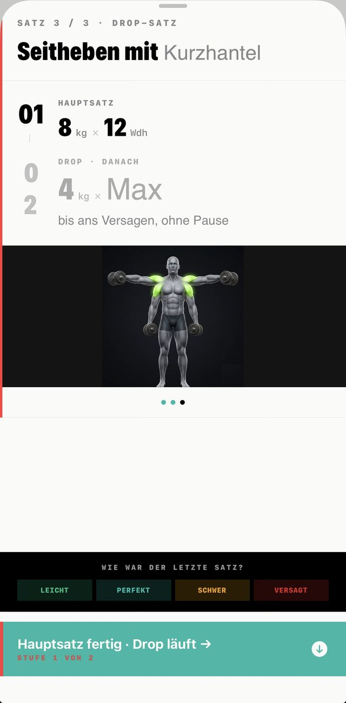
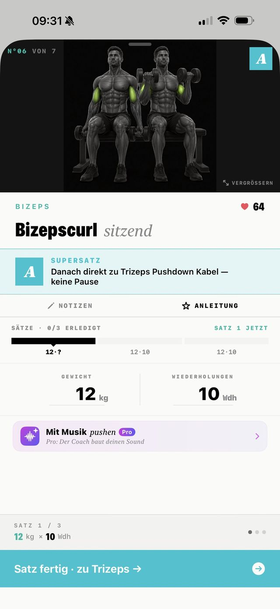
Studio, Wohnzimmer oder Hotelzimmer. Mit Hanteln, am Kabelzug oder ganz ohne Geräte. Du sagst, was du hast — Trainiq passt Übungen und Plan an.
Plane Workouts mit Aufwärm-, AMRAP-, Drop- und Supersätzen. Schnelle Eingabe direkt auf der Übungs-Card, mit Bild und Anleitung. Pausen-Timer als Live Activity auf Sperrbildschirm und in der Dynamic Island. Dazu Pushmusik, die zum Training automatisch die passende Musikrichtung auflegt.
Frag den Coach, wie deine Trainingswoche lief, wann du wieder hart trainieren solltest oder was du heute essen kannst. Er analysiert deine letzten Einheiten, schlägt Steigerungen vor, passt Pläne an dein Equipment an — und antwortet in deiner Sprache.
Tagesbilanz für Kalorien, Eiweiß, Kohlenhydrate und Fett. Mahlzeiten per Foto, Barcode oder Etikett erfassen. Coach-Vorschläge mit einem Tap ins Tagestracking oder ins Kochbuch übernehmen.
GPS-Tracking für Strecke, Pace und Höhenmeter — komplett lokal. Dazu die besten Lauffenster der Woche nach Wetter, plus Wochen- und Monatsstatistik im Editorial-Layout.
Wähl deine Stilrichtung — Heavy, Hype, Techno, Phonk … — oder beschreib sie frei. Der Coach baut 30+ Tracks und spielt sie über Apple Music; per Puls wechselt sie automatisch mit.
Volumen, Trainingszeit und Rekorde pro Woche und Monat. Fortschritt, den du wirklich siehst.
Fitnesszustand, heutiges Training und die nächsten 14 Tage auf dem Home-Screen — ein Tap zum Start.
Beim Laufen misst die Watch deinen Puls — Trainiq legt Tracks im passenden Tempo auf. Das Premium-Extra für Läufe.
Komplett auf Deutsch, Englisch, Spanisch und Französisch — inklusive Coach und Plan-Generator.
Mitten im Training eine Übung ergänzen, die nicht im Plan steht — nur für diese Einheit.
Gerät besetzt? Tausch gegen eine passende Alternative — Bild und Anleitung kommen mit.
Gelöschte Übungen liegen 30 Tage im Papierkorb und sind mit einem Tap wieder da.
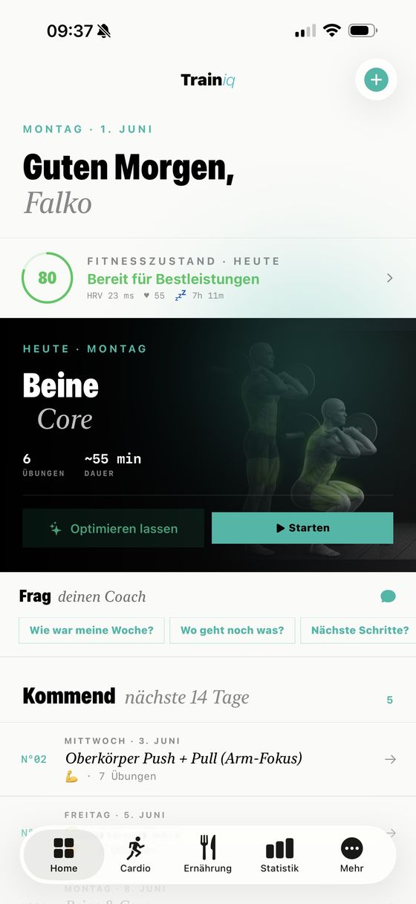
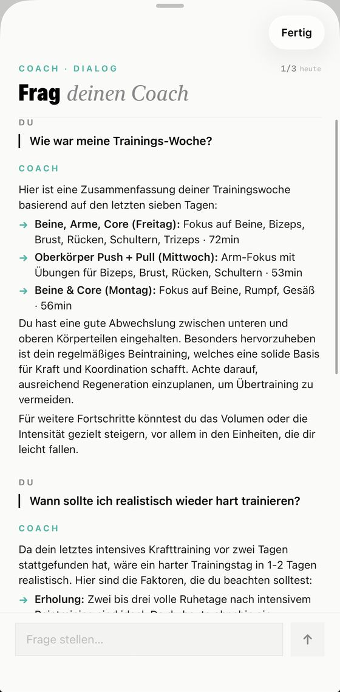
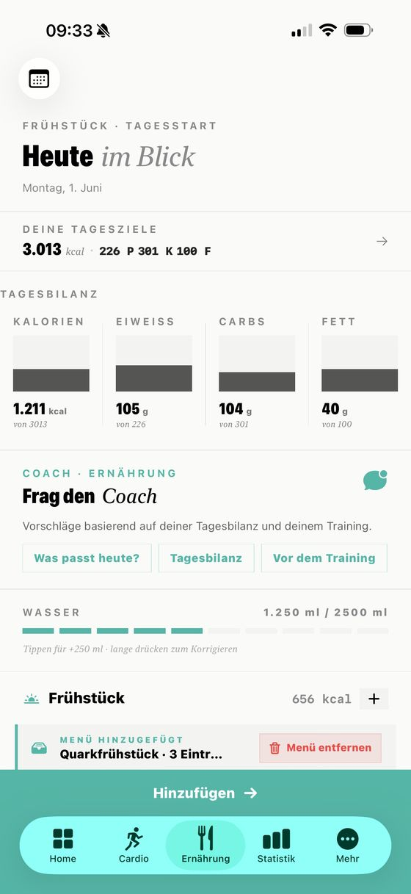
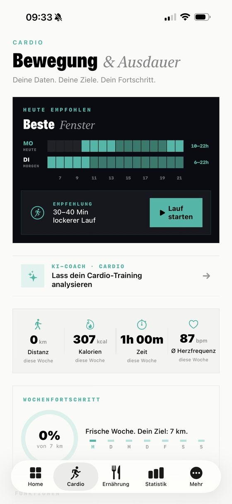
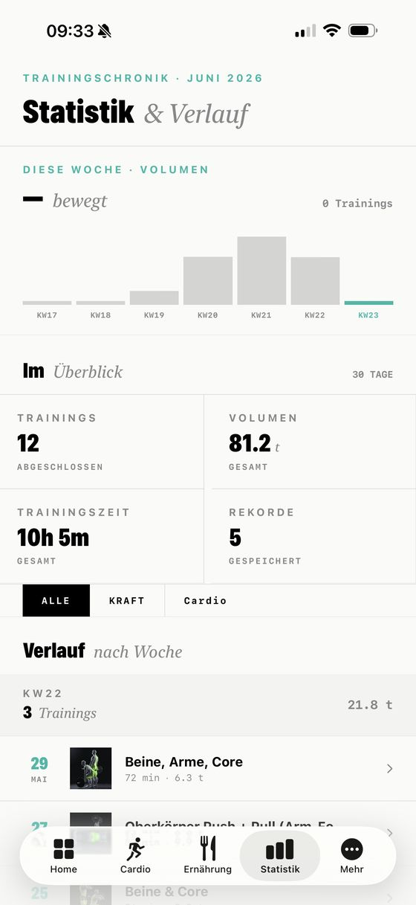
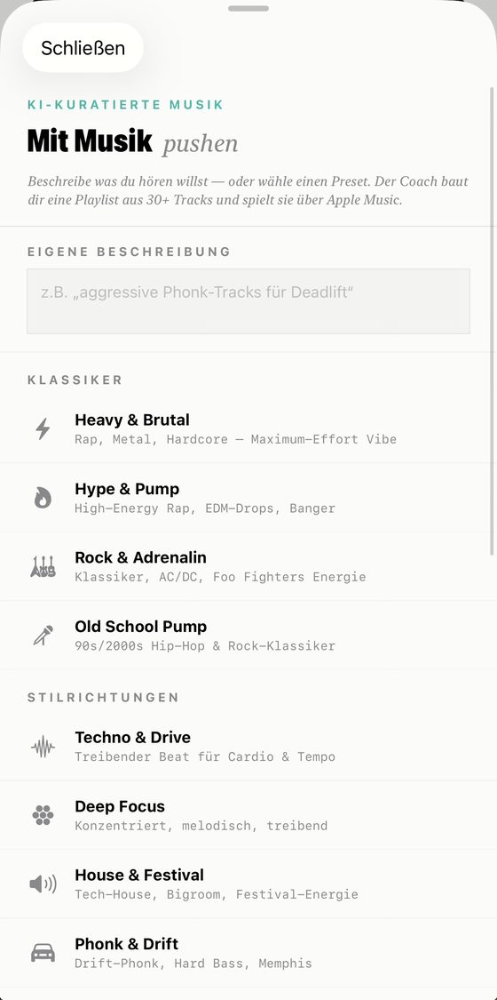
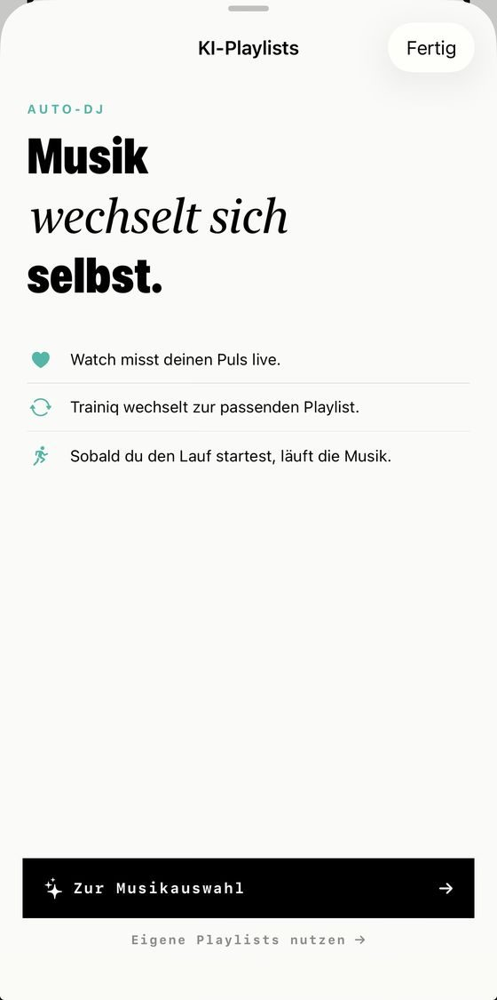
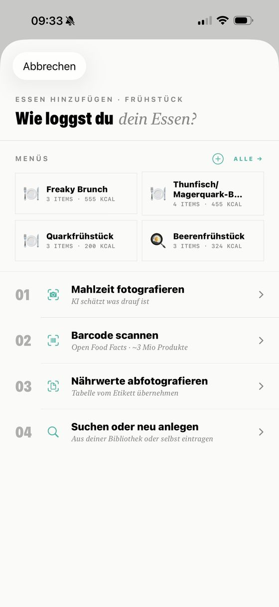
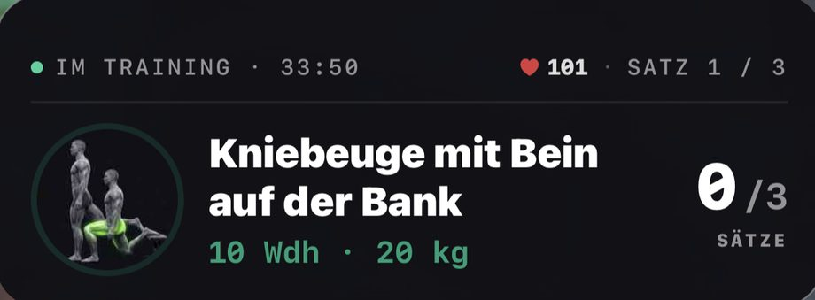
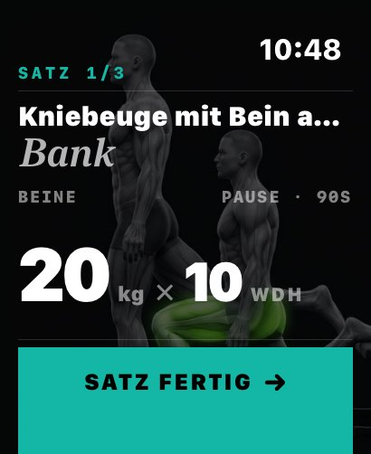
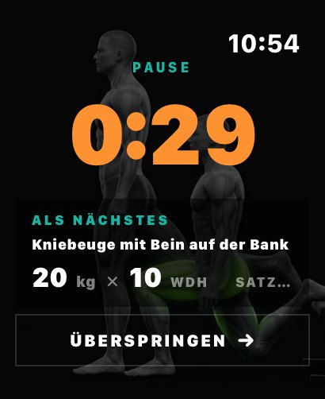
Konten. Trainiq braucht keine Anmeldung, keine E-Mail-Adresse, kein Passwort. Du installierst, du trainierst.
Tracker. Keine Werbe-SDKs, keine Marketing-Pixel, keine Aufzeichnung deines Verhaltens. IDFA wird nicht erhoben.
Lokal. Trainings, Pläne, Körpermaße, GPS-Routen, Mahlzeiten — alles liegt in SwiftData auf deinem iPhone. Backup nur via iCloud, wenn du es willst.
Eine Indie-App von einem einzelnen Entwickler — gebaut mit Apples eigenen Werkzeugen. Kein Cross-Platform-Kompromiss, kein Framework-Bloat.
Live Activity, Dynamic Island, Watch-App, HealthKit, MusicKit — alles, was iOS bietet, ist eingebunden, wenn du es willst.
Die Einreichung läuft. Bis dahin ist Trainiq via TestFlight im geschlossenen Beta-Test. Schreib uns gern, wenn du dabei sein willst.
Deutsch, Englisch, Spanisch und Französisch — die App folgt automatisch deiner iPhone-Sprache. Auch der KI-Coach und der Plan-Generator antworten in deiner Sprache.
Der Großteil der App ist und bleibt kostenlos. Für den KI-Coach und einige Pro-Funktionen ist ein Abo geplant. Endgültige Preise werden mit dem Launch bekanntgegeben.
Sie bleiben auf deinem iPhone. Wenn du iCloud-Backup aktiv hast, werden sie wie alle anderen App-Daten in deinem persönlichen iCloud-Backup gesichert. Nichts geht an unseren Server.
Nein — Trainiq ist iOS-nativ und nutzt Apple-spezifische Technologien wie HealthKit, Live Activity und Dynamic Island. Eine Android-Portierung würde das Erlebnis verwässern und ist nicht geplant.
Trainiq ist ein Projekt von Elbe Studio — einem One-Person-Studio in Magdeburg. Wenn du Feedback, Bugs oder Vorschläge hast, schreib an elbstudio.app@gmail.com.